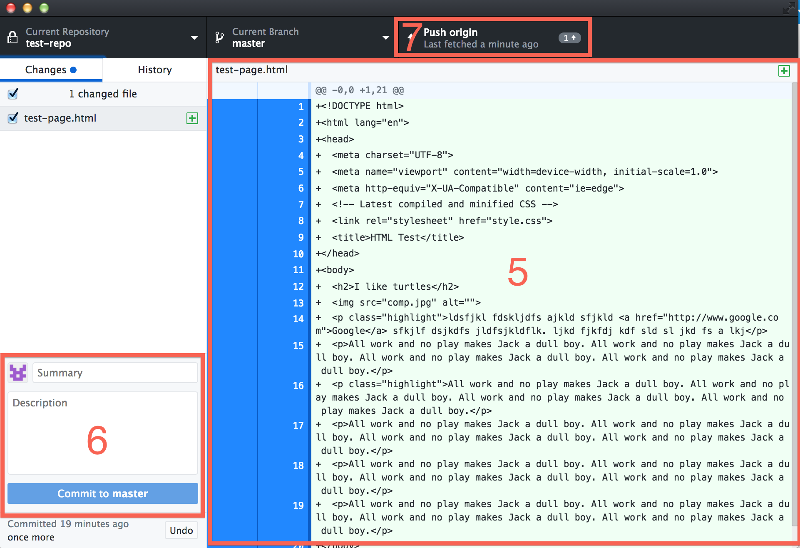

Chapter 6 Website creation and hosting
Now that you’ve learned HTML and CSS, it’s time to start building your own website! First, you’ll download a template of your own choosing. Once you have your website files, you’ll host them on GitHub so that anyone with an internet connection can see your page.
6.1 Download a website template
- Visit HTM5up and choose a template. I would recommend one of the following:
- Story
- Forty
- Stellar
- Hyperspace
- Solid State
- Strata
- Read Only
- Telephasic
- Unzip the download package. You should see a folder. Put this folder wherever you wish, but don’t forget where you put it.
- Inside the folder you just downloaded, you should see subfolders called, e.g., “assets” and “images,” as well as an index.html file. Open that index.html file in Atom.
- Play around with the HTML! Add your name to the page, maybe a description of yourself and your project. As you save your changes, look for them using Preview HTML in Atom OR by opening the index.html file in Chrome. (If you open the file in Chrome, you’ll need to refresh the Chrome tab whenever you save changes in Atom.)
6.2 Host your website using GitHub pages
Now that you have your website files, we’ll add them on GitHub. At the end of this process, your website will officially be on the web.
Apologies in advance: This setup process is confusing. In fact, GitHub in general is confusing until you get used to it. Please read carefully and ask for help if you encounter problems.
6.2.1 What is GitHub?
GitHub is sort of like Google Drive, but for software development. Your projects will live on GitHub’s servers (the “cloud”) but also on your own computer. An application called GitHub Desktop will work as a sort of go-between, ensuring that the files on your computer remain synced with the files on GitHub.
Finally, a service called GitHub Pages will allow you to keep your website on GitHub’s servers for the low, low price of free.
One really nice feature of GitHub is its version control, which means that if you really mess up your website, you can revert to an earlier version. GitHub automatically saves every single version that you commit. This feature is very useful, but it also explains why GitHub takes some getting used to. You have to follow a somewhat complicated process to push your changes to GitHub, but in return you get the security of knowing that every version of your project will be archived forever.
6.2.2 Create a GitHub account
- Visit github.com and sign up for an account using your vt.edu email. Do NOT use a non-vt email. Choose a username that’s close enough to your real name to be recognizable to me.
6.2.3 Download and set up GitHub Desktop
Note that GitHub recently released a new version of this software, so I haven’t tested these instructions except on my own machine.
- Visit desktop.github.com and download the appropriate version (Mac/Win) for your machine. Be sure to put the application wherever you keep the other applications on your computer.
- Open GitHub Desktop and enter your GitHub username and password.
6.2.4 Create a repository for your website and add your website files
This is the confusing part, so read carefully.
- In GitHub Desktop, Choose File > New Repository
- Name your repository yourgithubusername.github.io (e.g., andylaut.github.io)
It’s VERY important to use the yourgithubusername.github.io format. If you don’t, subsequent steps may not work.
- If the previous step worked, then GitHub will create a folder called yourgithubusername.github.io somewhere on your computer (on my Mac, it was in the Documents folder). Locate that folder. You can always find your folder via GitHub Desktop by selecting Repository => Show in Finder/Explorer. You can also open files in Atom by selecting Repository => Open in Atom.
Now–and pay careful attention here–move your website files but NOT the containing folder into the yourgithubusername.github.io folder. The folder structure should look like this:
yourgithubusername.github.io assets images index.html NOT yourgithubusername.github.io container folder assets images index.html- Now return to GitHub Desktop. Verify that the Current Repository is set to yourgithubusername.github.io. You should see a bunch of text in the main window of the interface. This text represents changes to the repository (i.e., the files you just added). See the box labeled 5 below.
 - Commit the changes by typing a summary and description of the changes (description is optional but recommended) near the bottom of the interface, then clicking the Commit to master button (box 6 above). Commit to master means that you want to make these changes to the main version of your project on GitHub.
After you commit, look near the top of the interface for a tab that says either Publish or Push origin (box 7 above). Click that tab. Once the changes are done syncing (may take a minute or so), visit yourgithubusername.github.io to see your site on the honest-to-goodness internet. You now have a real website!
Now, whenever you make changes to your project in Atom (adding images, modifying HTML or CSS), the changes will appear in GitHub Desktop. Green highlighting represents added material; red highlighting represents deleted material. Whenever you want to push the changes to GitHub, follow steps 6 and 7 above.
6.2.5 Finding and modifying your files
So you now have
- Your website files on your computer
- Your website files on github.com
- GitHub desktop in between
It’s a lot to keep up with! However, one advantage of using Atom is that it’s built by GitHub, so Atom and GitHub tend to interface well. Here’s how you can access everything you need from GitHub Desktop:
In the GitHub Destop menu bar, select Repository. You can now access your files on github.com, in Atom, or in your system’s file browser (Finder for Mac, Explorer (I think???) for Windows).6.3 Emmet HTML shortcuts
HTML is the language of the web. In many ways, HTML is a blessing: It allows creators across the world to make consistent, clear, usable content. Nevertheless, writing in HTML can feel like a chore. (How many times do I have to type <p></p>?) Emmet makes HTML easy–easier, in fact, than writing similar documents in Word–assuming those documents contain headings, links, images, lists, etc.
Emmet provides an extensive list of shortcuts for HTML, CSS, and more. You can find the full list via the Emmet cheatsheet, but here’s a table of some of the handiest Emmet shortcuts. (Press tab after entering each shortcut to execute.)
| Content | Shortcut | Result |
|---|---|---|
| HTML doc | ! |
<!DOCTYPE html> (document skeleton) |
| Link | a |
<a href=""></a>
|
| Image | img |
<img src="" alt="" />
|
| Bold | str |
<strong></strong>
|
| Italics | em |
<em></em> |
| Ordered (numbered) list | ol+ |
<ol> <li></li> </ol> |
| Unordered (bulleted) list | ul+ |
<ul> <li></li> </ul> |
- Open your Markdown file in Atom.
- Open the Markdown Preview window and right-click.
- Select Copy as HTML.
- Paste your HTML into the appropriate place (probably somewhere in the body section) in your HTML document.